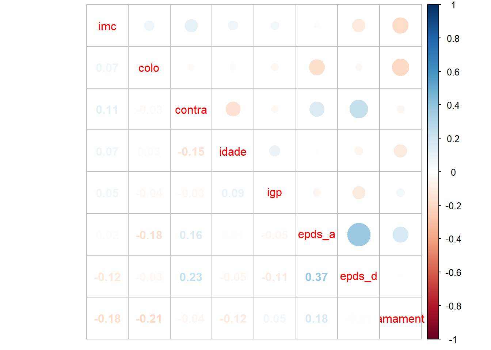

Capítulo8 Correlação entre variáveis quantitativas
Nos Capítulos 5 e 6 vimos como comparar grupos com relação a variáveis quantitativas e no Capítulo 7 vimos como avaliar a associação entre duas variáveis qualitativas. Agora, vamos abordar nesse capítulo medidas que quantificam a correlação linear entre duas variáveis quantitativas: coeficiente de correlação linear de Pearson e coeficiente de Spearman.
Considermos novamente a base de dados das gestações gemelares. Antes de importar a base de dados, vamos carregar os pacotes que usaremos aqui.
library(readr) #leitor da base de dados
library(dplyr) #para manipulação dos dados
library(Hmisc) #para matriz de correlação com valor p
library(corrplot) #para fazer o gráfico correlogramaAgora vamos importar a base de dados gemelares:
O coeficiente de correlação de Pearson é uma medida do grau correlação linear entre duas variáveis quantitativas. Mede a proximidade dos dados a uma reta.
Dados os valores observados \((x_1,y_1), (x_2, y_2),\cdots, (x_n,y_n)\), o coeficiente de correlação linear de Pearson é
\[\rho=\frac{1}{n}\sum\limits_{i=1}^n\left(\frac{x_i-\bar{x}}{s_x}\right)\left(\frac{y_i-\bar{y}}{s_y}\right)\]
em que:
\(\bar{x}\) e \(\bar{y}\) são as médias das observações das variaveis \(X\) e \(Y\).
\(s_{x}\) e \(s_{y}\) são os devios padrão das variáveis \(X\) e \(Y\).
O coeficiente de correlação de Peason assume valor no intervalo [-1,1], em que:
\(\rho\) próximo de -1, indícios de que há uma correlação linear negativa entre as variáveis;
\(\rho\) próximo de 0, não há indícios de correlação entre as variáveis;
\(\rho\) próximo de 1, indícios de que há uma correlação linear positiva entre as variáveis.
Para calcular o coeficiente de correlação linear de Pearson no R, vamos primeiro selecionar as variáveis quantitativas da base de dados gemelares. Vamos usar a função select do pacote dplyr.
dados_select <- select(dados,imc,colo=medida_colo,contra=num_contra_ctg,idade,igp,epds_a=epds_antes,epds_d=epds_depois,amament=tempo_amamentacao_meses)
#renomeamos algumas variaveis para não aparecer nomes muito grandesVamos usar a função rcorr do pacote Hmisc para calcular o coeficiente de correlação de Pearson e também apresentar o valor p do teste que apresenta as seguintes hipóteses: \(H_0: \rho=0\) e \(H_1:\rho\neq 0\). Vale ressaltar que esse teste avalia se a correlação é nula, mas nada diz sobre a sua intensidade.
## imc colo contra idade igp epds_a epds_d amament
## imc 1.00 0.07 0.11 0.07 0.05 0.02 -0.12 -0.18
## colo 0.07 1.00 -0.03 0.03 -0.04 -0.18 -0.03 -0.21
## contra 0.11 -0.03 1.00 -0.15 -0.03 0.16 0.23 -0.04
## idade 0.07 0.03 -0.15 1.00 0.09 0.01 -0.05 -0.12
## igp 0.05 -0.04 -0.03 0.09 1.00 -0.05 -0.11 0.05
## epds_a 0.02 -0.18 0.16 0.01 -0.05 1.00 0.37 0.18
## epds_d -0.12 -0.03 0.23 -0.05 -0.11 0.37 1.00 -0.01
## amament -0.18 -0.21 -0.04 -0.12 0.05 0.18 -0.01 1.00
##
## n
## imc colo contra idade igp epds_a epds_d amament
## imc 101 101 101 101 101 101 101 101
## colo 101 104 104 104 104 104 104 104
## contra 101 104 104 104 104 104 104 104
## idade 101 104 104 104 104 104 104 104
## igp 101 104 104 104 104 104 104 104
## epds_a 101 104 104 104 104 104 104 104
## epds_d 101 104 104 104 104 104 104 104
## amament 101 104 104 104 104 104 104 104
##
## P
## imc colo contra idade igp epds_a epds_d amament
## imc 0.5115 0.2571 0.5127 0.6107 0.8567 0.2336 0.0711
## colo 0.5115 0.7957 0.7702 0.6916 0.0731 0.7296 0.0363
## contra 0.2571 0.7957 0.1256 0.7313 0.1090 0.0176 0.6672
## idade 0.5127 0.7702 0.1256 0.3791 0.9528 0.5852 0.2259
## igp 0.6107 0.6916 0.7313 0.3791 0.6339 0.2512 0.6026
## epds_a 0.8567 0.0731 0.1090 0.9528 0.6339 0.0000 0.0724
## epds_d 0.2336 0.7296 0.0176 0.5852 0.2512 0.0000 0.9476
## amament 0.0711 0.0363 0.6672 0.2259 0.6026 0.0724 0.9476Se eu quiser apenas a matriz de correlação:
## imc colo contra idade igp
## imc 1.00000000 0.06607835 0.11382295 0.065884942 0.05125493
## colo 0.06607835 1.00000000 -0.02569084 0.028987512 -0.03936321
## contra 0.11382295 -0.02569084 1.00000000 -0.151166111 -0.03407257
## idade 0.06588494 0.02898751 -0.15116611 1.000000000 0.08713997
## igp 0.05125493 -0.03936321 -0.03407257 0.087139969 1.00000000
## epds_a 0.01819407 -0.17648916 0.15805936 0.005878708 -0.04724312
## epds_d -0.11958486 -0.03430514 0.23238785 -0.054129034 -0.11353009
## amament -0.18033322 -0.20553417 -0.04265977 -0.119767500 0.05164852
## epds_a epds_d amament
## imc 0.018194070 -0.119584864 -0.180333219
## colo -0.176489160 -0.034305144 -0.205534167
## contra 0.158059356 0.232387848 -0.042659768
## idade 0.005878708 -0.054129034 -0.119767500
## igp -0.047243121 -0.113530095 0.051648516
## epds_a 1.000000000 0.373988240 0.176917131
## epds_d 0.373988240 1.000000000 -0.006522458
## amament 0.176917131 -0.006522458 1.000000000Em cenários que há pontos discrepantes (possível ver por meio de um gráfico de dispersão entre as duas variáveis) ou os dados não pertencem a uma escala de medida padrão, mas existe uma ordenação clara (por exemplo, escores numa escala de 1 a 10), o coeficiente de correlação de Spearman pode ser utilizado. É uma medida não paramétrica de correlação de postos. Tanto a interpretação do valor do coeficiente quanto o teste de hipóteses discutidos para Pearson são similares para Spearman.
Para calcular o coeficiente de Spearman no R, precisamos mudar o argumento type="spearman, como segue:
## imc colo contra idade igp epds_a epds_d amament
## imc 1.00 0.07 0.12 0.16 0.06 0.02 -0.08 -0.17
## colo 0.07 1.00 -0.01 0.03 0.00 -0.19 -0.01 -0.18
## contra 0.12 -0.01 1.00 -0.14 0.03 0.06 0.18 -0.02
## idade 0.16 0.03 -0.14 1.00 0.10 -0.02 -0.03 -0.12
## igp 0.06 0.00 0.03 0.10 1.00 -0.09 -0.11 0.11
## epds_a 0.02 -0.19 0.06 -0.02 -0.09 1.00 0.35 0.15
## epds_d -0.08 -0.01 0.18 -0.03 -0.11 0.35 1.00 0.00
## amament -0.17 -0.18 -0.02 -0.12 0.11 0.15 0.00 1.00
##
## n
## imc colo contra idade igp epds_a epds_d amament
## imc 101 101 101 101 101 101 101 101
## colo 101 104 104 104 104 104 104 104
## contra 101 104 104 104 104 104 104 104
## idade 101 104 104 104 104 104 104 104
## igp 101 104 104 104 104 104 104 104
## epds_a 101 104 104 104 104 104 104 104
## epds_d 101 104 104 104 104 104 104 104
## amament 101 104 104 104 104 104 104 104
##
## P
## imc colo contra idade igp epds_a epds_d amament
## imc 0.5113 0.2502 0.1172 0.5777 0.8562 0.4216 0.0811
## colo 0.5113 0.9487 0.7560 0.9927 0.0529 0.9200 0.0694
## contra 0.2502 0.9487 0.1437 0.7335 0.5383 0.0632 0.8179
## idade 0.1172 0.7560 0.1437 0.3351 0.8152 0.7557 0.2415
## igp 0.5777 0.9927 0.7335 0.3351 0.3764 0.2878 0.2625
## epds_a 0.8562 0.0529 0.5383 0.8152 0.3764 0.0002 0.1297
## epds_d 0.4216 0.9200 0.0632 0.7557 0.2878 0.0002 0.9711
## amament 0.0811 0.0694 0.8179 0.2415 0.2625 0.1297 0.9711Podemos também fazer um correlograma com o auxílio do pacote corrplot:
corrplot.mixed(cor(dados_select,use="pairwise",
method="pearson")) #se quiser spearman, mudar method="spearman"